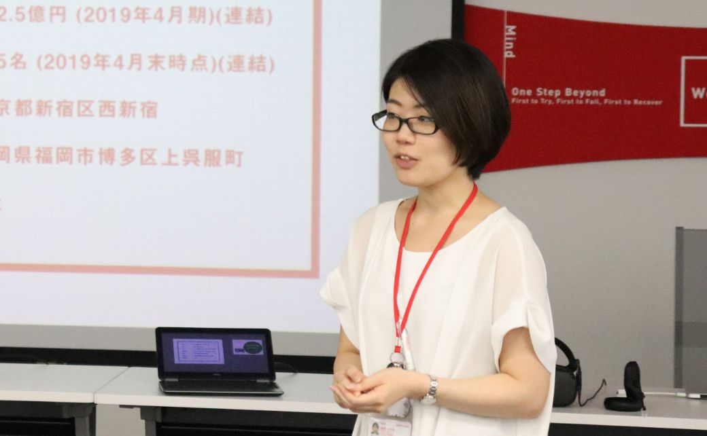

卒業生の声
私にとっての研究は、時間をかけた自分に対するつっこみでした

荻野さやか
株式会社gumi／Human Resources
2017年卒業
指導教員：齊藤麻人
研究テーマ：
企業家主義的都市における創造都市政策の変容 ～
横浜市を事例に官民の「協働」と「連合」の形成～
Q1.当領域への進学の経緯
私が大学院への進学を意識し始めたのは、大学2年生の後期でした。講義の内容が専門性を増
し、選択授業も増える中で、特定の地理範囲（区や市、地域など）における歴史やそこで暮らす人々の市民活動、行政の施策等に強く興味関心が引かれていることに気が付きました。大学での学びを通して自分の知らないことを知ること、それまで点と点の知識や情報だったものが結び付き自分の視野が広がっていくことが、とても嬉しく感動的だったことを覚えています。 その後は、もともと海外に興味があり、グローバリゼーションが都市部に及ぼす影響を研究したく、また幕末以降怒涛の歴史を持つ横浜という都市自体にも引かれて、横浜国立大学 都市イノベーション学府（齊藤 麻人研究室）に進学しました。
Q2.院生活が現在にどのように活きているか
大学院での生活は常に刺激的でした。同期の学生や周囲の先生方に恵まれたこともあり、昼夜問わず多くのことを調べ、議論し、考えた2年間でした。中でも研究を進めるにあたり特に学んだことは、最後まで考えることを諦めないことです。
私にとって大学院での研究とは、様々なことに疑問を持ち、再考し、多くの既存研究と自身が集めたデータと情報を用いて、今まで言われてきたことが本当にそうなのか問題提起をするための時間をかけたツッコミでした。集めたデータから証明できることの限界やもしかしたら自分の理解が間違っているのかもしれないという漠然とした自信のなさから挫けそうになることもありました。しかし、同期の仲間や先生方との議論を通して頭の中が整理されたり、気分をリフレッシュすることができ、最後までやり遂げることができました。
このように横浜国立大学で学んだことは、大学院を卒業し就職した今でも様々な仕事に挑戦する際の手助けになっています。就職活動を始めた当初は研究の延長として研究所や大学、土地開発行うディベロッパーでの就職を考えていましたが、様々な企業様とお会いしていく中で、卒業後は未知の領域が多くスピード感のある企業様で挑戦したいと思うようになりました。当時設立から10年足らずの中で凝縮された歴史を持つgumiは、社会人として初めて挑戦する際に多くを学ぶことができると考え、新卒第一期生として入社させていただきました。 現在、新卒という枠にとらわれず採用から海外拠点の管理、同一労働同一賃金への対応等、多くのチャンスをいただく中、大学院で培った諦めずに最後まで考え抜く力と周囲の方々の協力やアドバイスを通して、多くのことに挑戦し乗り越えることが出来きたと思っています。
Q3.後輩へのアドバイス
これから大学・大学院への進学を考えている皆さんへ、是非自分の4年間・2年間を掛けてじっくり考えてみたいテーマを見付けてください。テーマがまだないという方は、まずは興味関心の目を広げ情報収集をしてください。何かしら自分が引かれるものに学生時代を掛けて夢中になれるというのは、かけがえのない経験になると信じています。